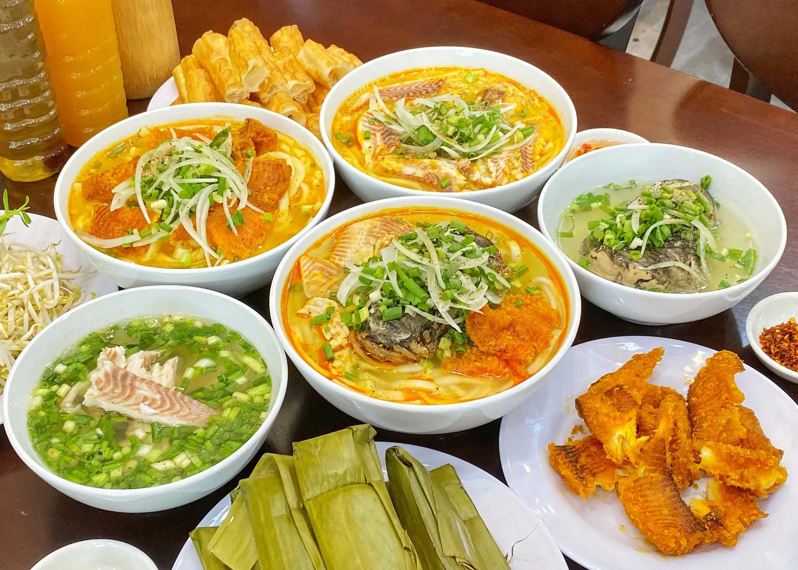
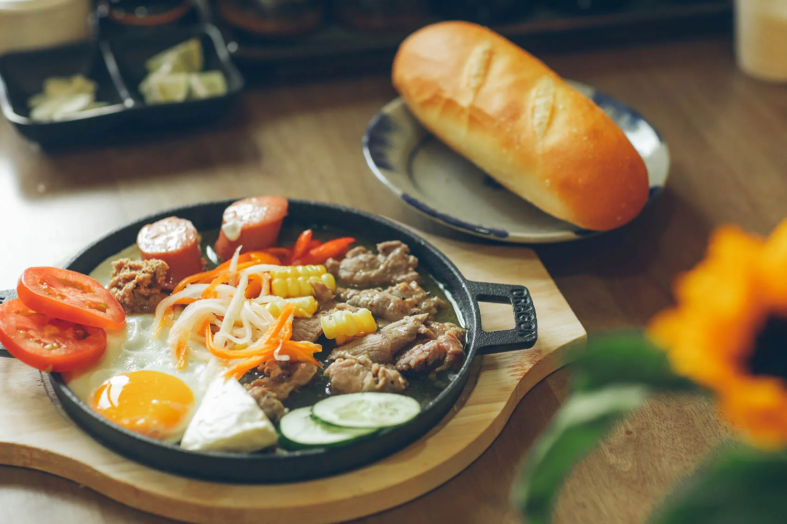
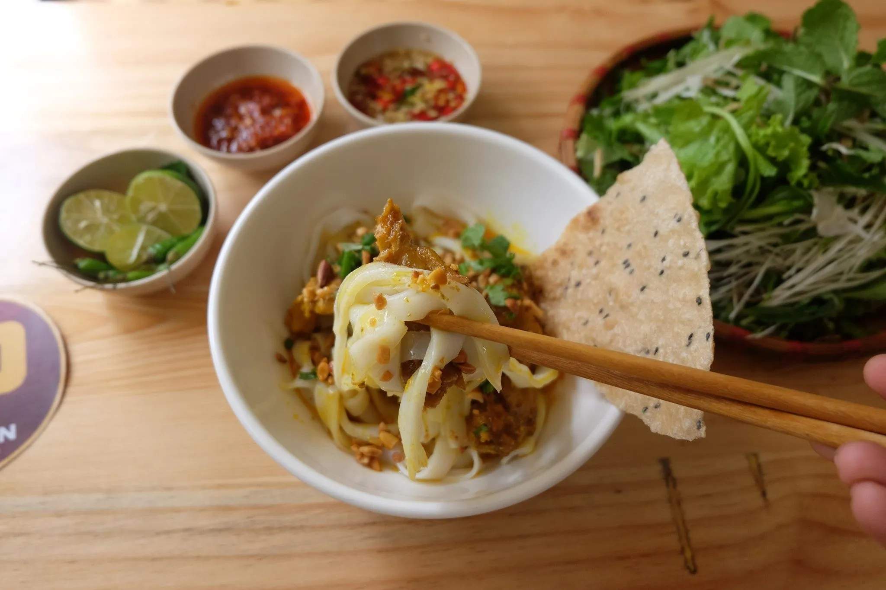
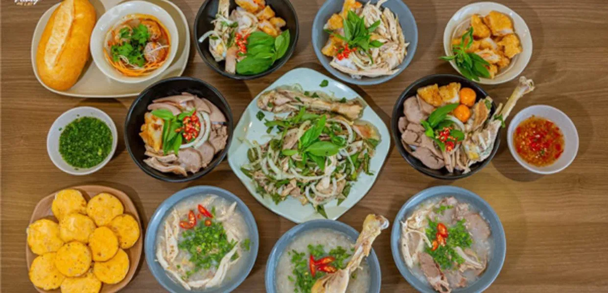
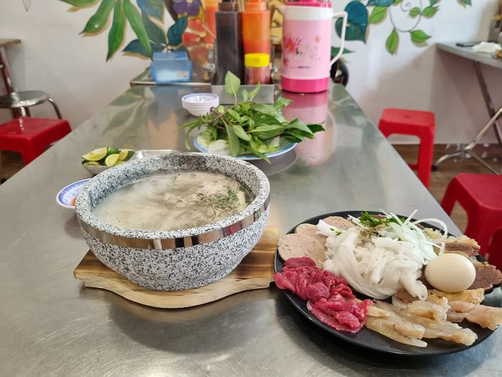

Top 30 quán ăn sáng ở Đà Lạt được du khách yêu thích

Mục lục bài viết
- 1. Ăn sáng ở Đà Lạt với bún bò thố đá Đoàn Viên
- 2. Bánh mì xíu mại – Món ăn sáng ở Đà Lạt trứ danh tại 37 Hoàng Diệu
- 3. Bánh canh cá lóc An – Ăn sáng ở Đà Lạt chuẩn vị miền Trung
- 4. Trải nghiệm bánh mì chảo nóng hổi khi ăn sáng ở Đà Lạt tại Icolor
- 5. Mì Quảng Nhà Shin – Hương vị xứ Quảng giữa lòng Đà Lạt cho bữa sáng trọn vẹn
- 6. Ăn sáng ở khu Hòa Bình Đà Lạt – Thiên đường ẩm thực buổi sáng
- 7. Bún riêu Dì Cảnh – Món ăn sáng ở Đà Lạt dân dã mà đậm đà
- 8. Bún bò Huế Thiên Trang – Bữa ăn sáng ở Đà Lạt đậm vị miền Trung
- 9. Mì trộn trứng lòng đào – Trải nghiệm ăn sáng ở Đà Lạt lạ miệng
- 10. Bánh mì Nhân Ngãi – Quán ăn sáng ở Đà Lạt nổi tiếng lâu năm
- 11. Bánh ướt Chồng – Lựa chọn ăn sáng ở Đà Lạt lý tưởng cho nhóm bạn
- 12. Phở 65 – Nét tinh túy phở Thìn Hà Nội cho buổi sáng ở Đà Lạt
- 13. Hủ tiếu gà Hồng – Món ăn sáng ở Đà Lạt khó tìm ở nơi khác
- 14. Hương Quán – Địa chỉ ăn sáng ở Đà Lạt được người bản địa yêu thích
- 15. Bánh mì chảo 27 – Quán ăn sáng ở Đà Lạt cho tín đồ món Tây Việt
- 16. Phở Uyên – Quán phở ăn sáng ở Đà Lạt được yêu thích suốt nhiều năm
- 17. Hủ tiếu Gia Cát – Điểm đến ăn sáng ở Đà Lạt rộng rãi, sạch sẽ
- 18. Bánh ướt lòng gà 28 Tăng Bạt Hổ – Món ăn sáng ở Đà Lạt trứ danh
- 19. Phở thố Chu Gia – Trải nghiệm phở sáng Đà Lạt độc đáo trong thố đá
- 20. Cà phê Thanh Thủy – Quán cà phê ăn sáng ở Đà Lạt view hồ Xuân Hương
- 21. Xôi Xéo Cô Ba – Quán ăn sáng Đà Lạt dân dã, đậm đà hương vị Bắc
- 22. Bánh bèo Bà Hường – Hơn 50 năm gìn giữ hương vị xưa
- 23. Miến Gà Hoa Trân – Hương vị đậm đà cho sáng se lạnh
- 24. Tiệm Cà Phê Túi Mơ To – Nơi khởi đầu ngày mới đầy thi vị
- 25. Mì Vĩnh Lợi – Tô mì xá xíu ấm lòng mỗi sáng
- 26. Cafe Mộc – Hương vị quê nhà giữa lòng Đà Lạt
- 27. Phở Chất – Phở ngon, không gian mộc mạc
- 28. Cháo Ếch Singapore – Món lạ giữa lòng phố núi
- 29. Cháo Lòng 5A – Quán cháo nổi tiếng Đà Lạt
- 30. Mì hoành thánh Tàu Cao – Quán lâu đời, đậm chất Hoa
Khi màn sương sớm còn vương trên những mái nhà, Đà Lạt hiện lên yên bình và thơ mộng – đó cũng là lúc lý tưởng để thưởng thức một bữa ăn sáng ơ Đà Lạt đúng điệu. Bắt đầu ngày mới tại Đà Lạt bằng những món ăn sáng hấp dẫn, từ các món truyền thống quen thuộc đến những biến tấu độc đáo, là trải nghiệm không thể thiếu với bất kỳ du khách nào.

Không chỉ đơn thuần là ăn sáng, đây còn là khoảnh khắc để cảm nhận trọn vẹn hương vị và hơi thở của thành phố ngàn hoa. Dưới tiết trời se lạnh đặc trưng, từng món ăn sáng Đà Lạt như mang theo cái tình, cái chất riêng khó nơi nào sánh được. Hãy để bữa sáng trở thành điểm nhấn đáng nhớ trong hành trình khám phá Đà Lạt của bạn.
1. Ăn sáng ở Đà Lạt với bún bò thố đá Đoàn Viên
Địa chỉ: 29B Trần Phú, P.4
Giờ mở cửa: 06:00 – 15:45
Giá: 65.000 – 120.000 VNĐ
Một lựa chọn lý tưởng cho ăn sáng ở Đà Lạt là bún bò Huế thố đá nóng hổi tại quán Đoàn Viên. Tô bún đậm đà, thịt mềm thơm và nước dùng ngọt thanh sẽ khiến bạn ấm lòng trong tiết trời se lạnh.

2. Bánh mì xíu mại – Món ăn sáng ở Đà Lạt trứ danh tại 37 Hoàng Diệu
Địa chỉ: 26 & 37 Hoàng Diệu, P.5
Giờ mở cửa: 06:00 – 09:00
Giá: 15.000 VNĐ
Bánh mì xíu mại tại địa chỉ 37 Hoàng Diệu, Đà Lạt, từ lâu đã trở thành một điểm đến quen thuộc với những ai đam mê ẩm thực nơi đây. Với mức giá phải chăng và hương vị đậm đà, món ăn này dễ dàng chinh phục thực khách ngay từ lần đầu nếm thử. Lớp bánh mì giòn rụm bên ngoài kết hợp hài hòa với xíu mại nóng hổi và lát chả lụa thơm ngon, tất cả tạo nên một bữa sáng lý tưởng giữa tiết trời se lạnh của Đà Lạt.

3. Bánh canh cá lóc An – Ăn sáng ở Đà Lạt chuẩn vị miền Trung
Địa chỉ: 23/2 Trần Phú, P.3
Giờ mở cửa: 06:30 – 19:00
Giá: 15.000 – 30.000 VNĐ
Điểm nổi bật của quán An chính là sự hòa quyện giữa không gian thoáng đãng và phong cách phục vụ nhanh nhẹn, chuyên nghiệp. Cá lóc tại quán được lựa chọn cẩn thận và chế biến trực tiếp, đảm bảo độ tươi ngon trong từng tô bánh canh. Chính điều đó đã giúp món bánh canh cá lóc ở đây trở thành lựa chọn hấp dẫn cho bữa sáng tại Đà Lạt.

4. Trải nghiệm bánh mì chảo nóng hổi khi ăn sáng ở Đà Lạt tại Icolor
Địa chỉ: 23/2 Đặng Thái Thân, P.3
Giờ mở cửa: 07:00 – 11:00
Giá: 45.000 – 65.000 VNĐ
Thưởng thức bữa sáng tại quán Icolor ở Đà Lạt, bạn sẽ được trải nghiệm món bánh mì chảo nóng hổi, kết hợp cùng nước sốt xíu mại đậm đà. Giữa tiết trời se lạnh đặc trưng của thành phố ngàn hoa, món ăn mang đến cảm giác ấm áp, trọn vị trong từng miếng. Với nhiều loại topping như pate, xúc xích, xíu mại và bánh mì giòn rụm, bữa sáng tại đây không chỉ ngon miệng mà còn đầy đủ dinh dưỡng.

5. Mì Quảng Nhà Shin – Hương vị xứ Quảng giữa lòng Đà Lạt cho bữa sáng trọn vẹn
Địa chỉ: 209 Nguyễn Công Trứ, P.2
Giờ mở cửa: 06:00 – 14:00 (T3–CN), 09:00 – 17:00 (T2)
Giá: 25.000 – 40.000 VNĐ
Mì Quảng Nhà Shin là một trong những món ăn sáng đặc sắc tại Đà Lạt, mang đậm phong vị truyền thống của ẩm thực Quảng Nam. Quán được mở bởi người chủ gốc Quảng, nhờ vậy mà hương vị luôn giữ được sự chuẩn mực và đậm đà. Thực khách đến đây có thể lựa chọn nhiều biến tấu hấp dẫn như mì Quảng bò, gà, ếch, cá lóc hay lươn – tất cả đều được chế biến kỹ lưỡng, phù hợp với khẩu vị đa dạng.

6. Ăn sáng ở khu Hòa Bình Đà Lạt – Thiên đường ẩm thực buổi sáng
6.1 Bánh ướt lòng gà Trang
Địa chỉ: 15F Tăng Bạt Hổ & 3B Mai Sơn Trang
Giờ mở cửa: 06:00 – 18:00
Giá: 30.000 – 66.000 VNĐ
Không quá lời khi nói rằng bánh ướt lòng gà đã trở thành một trong những món ăn đặc trưng của ẩm thực Đà Lạt. Ghé quán Trang vào buổi sáng, bạn sẽ được thưởng thức đĩa bánh ướt mềm mịn, ăn kèm với thịt gà xé thơm ngọt và lòng gà giòn dai hấp dẫn. Gà ở đây có độ dai vừa phải, không bở, được nêm nếm khéo léo, hòa quyện cùng nước mắm đậm đà, tạo nên hương vị khó quên cho thực khách.

6.2 Phở Hiếu – Lựa chọn ăn sáng ở Đà Lạt gần trung tâm
Địa chỉ: 103 Nguyễn Văn Trỗi
Giờ mở cửa: 06:00 – 20:30
Giá: 20.000 – 80.000 VNĐ
Tọa lạc gần trung tâm Đà Lạt, quán phở Hiếu là điểm dừng chân lý tưởng cho bữa sáng, trưa hay tối. Thực đơn phong phú với các lựa chọn như phở bò tái, gân, gầu, nạm cho đến thập cẩm, mỗi tô đều mang hương vị đậm đà, hài hòa. Nước dùng trong vắt, thanh ngọt và không quá béo, tạo cảm giác dễ chịu khi thưởng thức. Một điểm thú vị tại đây là bạn có thể ăn kèm với bánh quẩy – sự kết hợp mới lạ nhưng vô cùng cuốn hút.

6.3 Tùng Cafe – Không gian hoài cổ cho buổi sáng thư thái
Địa chỉ: 6 khu Hòa Bình
Giờ mở cửa: 07:00 – 21:30
Giá: 15.000 – 55.000 VNĐ
Tùng Cafe mang đến một trải nghiệm ẩm thực độc đáo cho bữa sáng tại Đà Lạt. Không chỉ nổi tiếng với hương vị cà phê đặc trưng, quán còn phục vụ những món ăn chất lượng, giúp thực khách nạp năng lượng cho hành trình khám phá thành phố ngàn hoa đầy thú vị.

6.4 Bánh căn 14 Tăng Bạt Hổ – Điểm đến ăn sáng ở Đà Lạt được lòng giới trẻ
Địa chỉ: 30 Tăng Bạt Hổ
Giờ mở cửa: 13:00 – 22:00
Giá: 15.000 – 20.000 VNĐ
Quán bánh căn tại số 14 Tăng Bạt Hổ nổi bật với thực đơn đa dạng, mang đến nhiều lựa chọn hấp dẫn cho bữa sáng ở Đà Lạt. Từ bánh căn trứng gà, trứng cút cho đến bánh căn bò, mỗi loại đều mang hương vị riêng biệt. Điểm đặc sắc của quán chính là phần nước chấm – gồm xíu mại thơm béo và nước mắm đậm đà – góp phần làm nổi bật hương vị của từng chiếc bánh căn.

7. Bún riêu Dì Cảnh – Món ăn sáng ở Đà Lạt dân dã mà đậm đà
Địa chỉ: Hẻm 23/6 Bà Triệu, P.1
Giờ mở cửa: 06:00 – 10:00
Giá: 25.000 – 35.000 VNĐ
Quán ăn sáng Dì Cảnh ở Đà Lạt mang đến món bún riêu đầy hấp dẫn với topping phong phú như chả giò, gạch cua, thịt cua xay nhuyễn, huyết heo… Tô bún nóng hổi không chỉ đậm đà mà còn hài hòa khi ăn kèm rau sống tươi xanh, giúp món ăn thêm phần thanh mát và cân bằng về hương vị.

8. Bún bò Huế Thiên Trang – Bữa ăn sáng ở Đà Lạt đậm vị miền Trung
Địa chỉ: 2B Hồ Tùng Mậu, P.10
Giờ mở cửa: 06:00 – 15:00
Giá: 30.000 – 50.000 VNĐ
Khi khám phá ẩm thực sáng tại Đà Lạt, bún bò Huế Thiên Trang là một lựa chọn bạn không nên bỏ lỡ. Tô bún tại đây được nêm nếm vừa vặn, đầy đặn với nhiều loại topping hấp dẫn và rau sống tươi ngon đi kèm. Ngoài ra, quán còn chuẩn bị sẵn các loại gia vị như sa tế, nước mắm ớt, chanh và ớt tươi để thực khách dễ dàng điều chỉnh hương vị theo sở thích cá nhân.

9. Mì trộn trứng lòng đào – Trải nghiệm ăn sáng ở Đà Lạt lạ miệng
Địa chỉ: 66 Nguyễn Lương Bằng, P.2
Giờ mở cửa: 07:00 – 19:30
Giá: 30.000 – 40.000 VNĐ
Nếu đang băn khoăn không biết ăn sáng gì ở Đà Lạt, mì trộn trứng lòng đào chắc chắn là món ăn bạn nên thử. Món mì tại quán hấp dẫn bởi sự kết hợp hài hòa giữa xá xíu đậm vị, gà xé mềm, trứng lòng đào béo ngậy, tóp mỡ giòn tan và rau cải tươi xanh. Đặc biệt, phần nước dùng được ninh từ gà tươi, không sử dụng bột ngọt, mang đến vị ngọt thanh tự nhiên, làm nên nét riêng cho quán ăn sáng này.

10. Bánh mì Nhân Ngãi – Quán ăn sáng ở Đà Lạt nổi tiếng lâu năm
Địa chỉ: 215 Bùi Thị Xuân, P.8
Giờ mở cửa: 06:00 – 21:00
Giá: 13.000 – 24.000 VNĐ
Bánh mì Nhân Ngãi là một trong những địa chỉ ăn sáng được yêu thích tại Đà Lạt, ghi điểm với cả du khách lẫn người dân địa phương nhờ hương vị đặc trưng khó quên. Vỏ bánh được nướng vừa tới, giòn bên ngoài nhưng vẫn giữ được độ mềm mại bên trong. Nhân bánh là sự phối hợp tinh tế giữa thịt nướng, pate béo, chả lụa và thịt nguội, tạo nên một tổng thể hài hòa, đậm đà, khiến ai thưởng thức cũng dễ xiêu lòng.

11. Bánh ướt Chồng – Lựa chọn ăn sáng ở Đà Lạt lý tưởng cho nhóm bạn
Địa chỉ: Hẻm 85 Hai Bà Trưng, P.6
Giờ mở cửa: 08:00 – 21:00
Giá: 20.000 – 30.000 VNĐ
Món bánh ướt này là một lựa chọn sáng giá cho bữa sáng tại Đà Lạt, nổi bật với lớp bánh mỏng, dẻo và luôn được dọn lên khi còn nóng hổi. Khi ăn, bạn sẽ cảm nhận được sự kết hợp hài hòa giữa bánh và các loại nhân đầy đặn. Đặc biệt, món ăn được phục vụ cùng giò lụa, giá đỗ, hành phi, rau sống, nem chua… và không thể thiếu 4 loại nước chấm đặc trưng của quán, góp phần làm nên hương vị riêng biệt khó quên.

12. Phở 65 – Nét tinh túy phở Thìn Hà Nội cho buổi sáng ở Đà Lạt
Địa chỉ: 291 Hai Bà Trưng, P.6
Giờ mở cửa: 08:30 – 22:30
Giá: 40.000 – 55.000 VNĐ
Trong danh sách những quán ăn sáng nên thử tại Đà Lạt, Phở Dung 65 là cái tên không thể bỏ qua. Quán nổi bật với món phở Thìn – biểu tượng ẩm thực nổi tiếng từ Hà Nội – mang đến hương vị đặc trưng nhờ nước dùng đậm đà, được chế biến theo công thức gia truyền. Hiểu rõ khẩu vị đa dạng của thực khách, quán phục vụ nhiều lựa chọn như phở tái, nạm, xí quách hay kết hợp cùng trứng gà ta lòng đào béo ngậy, tạo nên bữa sáng trọn vẹn và đầy hấp dẫn.

13. Hủ tiếu gà Hồng – Món ăn sáng ở Đà Lạt khó tìm ở nơi khác
Địa chỉ: Cuối đường Lê Quý Đôn
Giờ mở cửa: 10:00 – 17:00
Giá: 20.000 – 30.000 VNĐ
Hủ tiếu gà Hồng là một món ăn sáng độc đáo ở Đà Lạt, gây ấn tượng với sợi hủ tiếu có độ dai đặc biệt, gần giống sợi miến, tạo cảm giác mới lạ khi thưởng thức. Nước dùng được nấu từ gà hầm, mang hương thơm nhẹ nhàng và vị đậm đà đặc trưng. Thịt gà tại quán mềm, thơm, phần da giòn nhẹ tạo nên sự hài hòa tuyệt vời khi ăn cùng hủ tiếu. Khi kết hợp với rau quế và ngò gai tươi, món ăn càng thêm dậy mùi và hấp dẫn.

14. Hương Quán – Địa chỉ ăn sáng ở Đà Lạt được người bản địa yêu thích
Địa chỉ: 47B Trần Bình Trọng, P. 5, Đà Lạt
Giờ mở bán: 9:00 – 22:00
Giá: 20.000 – 60.000 VNĐ
Nếu bạn muốn tìm một quán ăn sáng ở Đà Lạt đúng chuẩn vị người địa phương, Hương Quán là lựa chọn không nên bỏ lỡ. Nơi đây nổi bật với món gà đập lu đặc sắc, các món đặc sản Tây Nguyên và bữa sáng với bún, phở đậm đà nước dùng thơm lừng. Không gian ấm cúng chính là điểm cộng níu chân thực khách.

15. Bánh mì chảo 27 – Quán ăn sáng ở Đà Lạt cho tín đồ món Tây Việt
Địa chỉ: 105 Nguyễn Lương Bằng, P.2, Đà Lạt
Giờ mở bán: 6:30 – 14:00
Giá: 20.000 – 30.000 VNĐ
Bánh mì chảo 27 là quán ăn sáng ở Đà Lạt hấp dẫn, chỉ cách chợ khoảng 2km. Mỗi phần bánh mì chảo tại đây đầy đặn với pate, trứng, thịt bò, xúc xích… nóng hổi trên chảo gang, phù hợp với cả người lớn và trẻ nhỏ.

16. Phở Uyên – Quán phở ăn sáng ở Đà Lạt được yêu thích suốt nhiều năm
Địa chỉ: 10 Xô Viết Nghệ Tĩnh, P.7, Đà Lạt
Giờ mở bán: 7:00 – 16:30
Giá: 25.000 – 35.000 VNĐ
Một bát phở nghi ngút khói, nước dùng ngọt thanh từ xương và thịt bò mềm thơm – đó là những gì bạn sẽ thưởng thức tại Phở Uyên. Đây là địa điểm ăn sáng ở Đà Lạt đã gắn bó với người dân và du khách trong nhiều năm.

17. Hủ tiếu Gia Cát – Điểm đến ăn sáng ở Đà Lạt rộng rãi, sạch sẽ
Địa chỉ: 221/9 Hai Bà Trưng, P.6, Đà Lạt
Giờ mở bán: 6:00 – 22:00
Giá: 50.000 – 60.000 VNĐ
Hủ tiếu Gia Cát là quán ăn sáng ở Đà Lạt có không gian thoáng đãng, sạch sẽ. Tô hủ tiếu nam vang tại đây đầy ắp topping như thịt, tôm, trứng cút… với hai lựa chọn khô hoặc nước theo khẩu vị.

18. Bánh ướt lòng gà 28 Tăng Bạt Hổ – Món ăn sáng ở Đà Lạt trứ danh
Địa chỉ: 28 Tăng Bạt Hổ, P.1, Đà Lạt
Giờ mở bán: 6:00 – 20:00
Giá: 35.000 – 120.000 VNĐ
Khi nhắc đến ăn sáng ở Đà Lạt, bánh ướt lòng gà là món không thể thiếu. Quán 28 Tăng Bạt Hổ là cái tên nổi bật với lớp bánh mỏng mịn, gà mềm, nước chấm đậm đà và nhiều món ăn kèm hấp dẫn như gỏi, cháo, trứng non.

19. Phở thố Chu Gia – Trải nghiệm phở sáng Đà Lạt độc đáo trong thố đá
Địa chỉ: 29 Thông Thiên Học, P.2, Đà Lạt
Giờ mở bán: 6:00 – 22:00
Giá: 60.000 – 130.000 VNĐ
Không giống với các quán ăn sáng ở Đà Lạt khác, Phở thố Chu Gia đem đến trải nghiệm thú vị khi dùng phở trong thố đá sôi sùng sục. Thịt bò tái, bánh phở tươi ngon được phục vụ riêng, tăng hương vị đặc trưng và giữ nóng lâu hơn.

20. Cà phê Thanh Thủy – Quán cà phê ăn sáng ở Đà Lạt view hồ Xuân Hương
Địa chỉ: 2 Nguyễn Thái Học, Đà Lạt
Giờ mở bán: 6:30 – 22:00
Giá: 50.000 – 132.000 VNĐ
Cà phê Thanh Thủy là nơi ăn sáng ở Đà Lạt lý tưởng cho ai yêu khung cảnh thơ mộng bên hồ Xuân Hương. Quán phục vụ các món ăn sáng như phở, cơm sườn, bánh bao chiên… cùng cà phê đặc trưng, hòa quyện trong không gian xanh mát.


Tối Đà Lạt se lạnh, còn gì tuyệt hơn một bữa nướng nghi ngút khói giữa không gian đậm chất chill?
Sau một ngày lang thang cà phê, săn mây hay dạo quanh các con dốc mộng mơ, hãy để Tiệm Nướng & Chill Xóm Lèo trở thành điểm dừng chân ấm áp của bạn khi đêm xuống.
🔥 Quán chỉ mở buổi tối – đúng thời điểm lý tưởng để:
🥩 Thưởng thức bò nướng mềm tan, thơm lừng, tẩm ướp chuẩn vị nhà làm.
🦑 Nhâm nhi hải sản tươi rói như tôm, mực, bạch tuộc nướng nóng hổi, đậm đà.
🥕 Cắn thử miếng rau củ Đà Lạt nướng ngọt bùi, tươi sạch từ nông trại địa phương.
✨ Không gian ngoài trời ấm cúng, ánh đèn vàng len lỏi qua làn khói bếp từ những nhà lồng trồng rau của người dân địa phương, ngắn hoàng hôn và đặc biệt là trải nghiệm săn tàu lửa… Chill đúng kiểu Đà Lạt, không cần chỉnh.
📍 Địa chỉ: 113 Huỳnh Tấn Phát, Phường Xuân Trường, Đà Lạt
-
Google Map: Xem Đường Đi
-
Inbox đặt bàn: Tại Đây
-
Hotline: 076.45.27.336 – 0899.428.434 – 0902.912.240
✨ Đừng quên ghé qua Tiệm Nướng & Chill Xóm Lèo để vừa thưởng thức món ngon vừa hòa mình vào sự yên bình của Đà Lạt về đêm.
Đà Lạt không chỉ mê hoặc du khách bởi khí hậu se lạnh, cảnh sắc hữu tình mà còn khiến người ta thương nhớ bởi nền ẩm thực phong phú, đặc biệt là những món ăn sáng dân dã mà đầy tinh tế. Từ tô bún bò nóng hổi, ổ bánh mì giòn rụm, đến bát cháo ếch lạ miệng hay ly sữa đậu nành thơm béo – mỗi món ăn, mỗi quán nhỏ đều mang trong mình một câu chuyện, một dư vị rất riêng của thành phố ngàn hoa.
Hy vọng với 30 quán ăn sáng Đà Lạt ngon – bổ – rẻ mà bài viết đã gợi ý, bạn sẽ tìm được cho mình những địa điểm lý tưởng để bắt đầu một ngày mới trọn vẹn, no bụng và đầy cảm hứng. Đừng quên lưu lại danh sách này để mỗi sáng ở Đà Lạt, bạn luôn có một hương vị mới để khám phá nhé!